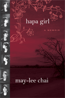

<body bgcolor="#FFFFFF" text="#000000" link="#0000FF" vlink="#CC0000" alink="#CC0000"><center><hr width="350" size="1" align="center" noshade>A vivid depiction of the racism suffered by a mixed-race family in rural South Dakota<hr width="350" size="1" align="center" noshade><p><a href="https://cdcshoppingcart.uchicago.edu/Cart/ChicagoBook.aspx?ISBN=9781592136155&&PRESS=temple" target="_top">Buy this book!</a> | <a href="https://cdcshoppingcart.uchicago.edu/Cart/Cart.aspx?PRESS=temple" target="_top">View Cart</a> | <a href="https://cdcshoppingcart.uchicago.edu/Cart/Cart.aspx?PRESS=temple" target="_top">Check Out</a></p><p></p></center><!--none//--><h1>Hapa Girl</h1>
<H2>A Memoir</H2>
<h3>May-lee Chai</h3>
<P>cloth 159213615X $65.50, Mar 07, <FONT COLOR=#990033>Available</FONT>
<br>paper 1592136168 $25.95, Oct 08, <FONT COLOR=#990033>Available</FONT>
<br>Electronic Book 1592136176 $25.95 <FONT COLOR=#990033>Available</FONT>
<BR> 232 pp
5.5x8.25
12&nbsp;halftones
</P><h3 align="center"><P><font color="#996633">Named one of the Notable Books in the Kiriyama Prize,
2008</font></P>
<P><font color="#996633">Honorable Mention at the Gustavus Myers Outstanding Book Awards,
2007</font></P>
</H3>
<BLOCKQUOTE><I><i>"A tour-de-force sojourn into a never-before-told zone of small town American bigotry. </i></i>Hapa Girl<i> is consistently stylish, permanently courageous, bitingly tragic, but always rationally detached with a Marx Brothers' wit. This is May-lee Chai's best comment yet about America."</i><br><b>&#151Anthony B. Chan</b>, author of </i>Perpetually Cool: The Many Lives of Anna May Wong</I></BLOCKQUOTE>
<p>In the mid-1960s, Winberg Chai, a young academic and the son of Chinese immigrants, married an Irish-American artist. In <i>Hapa Girl</i> ("hapa" is Hawaiian for "mixed") their daughter tells the story of this loving family as they moved from Southern California to New York to a South Dakota farm by the 1980s. In their new Midwestern home, the family finds itself the object of unwelcome attention, which swiftly escalates to violence. The Chais are suddenly socially isolated and barely able to cope with the tension that arises from daily incidents of racial animosity, including random acts of cruelty.
<p>May-lee Chai's memoir ends in China, where she arrives just in time to witness a riot and demonstrations. Here she realizes that the rural Americans' <i>"fears of change, of economic uncertainty, of racial anxiety, of the unknowable future compared to the known past were the same as China's. And I realized finally that it had not been my fault."</i>
<BR>&nbsp;<h2>Excerpt</h2><P>Excerpt available at <a href="http://www.temple.edu/tempress">www.temple.edu/tempress</a></p>
<BR>&nbsp;<h2>Reviews</h2>
<p><i>"I was captivated by May-lee Chai's </i>Hapa Girl<i> from the first sentence. It continued to be so powerful that I read it in one sitting. It's at once brutal and sad, humorous and plucky. Chai has beautifully captured the deep racism and bigotry that lurks in our country with how one misguided decision can change a family's fortunes forever. </i>Hapa Girl<i> made me think about the bonds of family and the vicissitudes of place long after I finished the last page."</i><br><b>&#151Lisa See</b>, author of <i>Snow Flower and The Secret Fan</i>
<p><i>"Easily labeled a coming-of-age story or a narrative about racial tensions in 1960s America, this memoir-whose title employs the Hawaiian word for mixed-is truly an homage to a loving marriage. Only the strongest kind of love could survive the crucible of a community hoping for a family's failure. Highly recommended for all libraries with large memoir and Asian collections."
</i><br>&#151;<b><i>Library Journal</i></b>
<p><i>"May-Lee Chai’s memoir Hapa Girl examines living on the mainland, conservative South Dakota in particular, and the racial tensions that accompany it…Chai is best when painting hurtful moments from her life relating to the issue at hand.…[It] could [be] a valuable resource for those seeking self-discovery on being of mixed race."
</i><br>&#151;<b><i>Honolulu Weekly</i></b>
<BR>&nbsp;<P><p>Hapa Girl was reviewed in the May 1 edition of “Christian Science Monitor.” To read the full review, <a href="http://www.csmonitor.com/2007/0501/p15s01-bogn.html" target="new">click here.</a>
<p>Hapa Girl was reviewed in the May 2 issue of Time (Asia). To read the full review, <a href="http://www.time.com/time/magazine/article/0,9171,1616748,00.html" target="new">click here.</a>
<p>Click <a href="1906_tg.pdf">here</a> to view a Teaching Guide for HAPA GIRL.</p></P><BR>&nbsp;<br>
<h2>Contents</h2><P>
<p>Table of Contents
<p>
Prologue<br>
Chapter 1: The Wearing of the Green<br>
Chapter 2: The Sexy Artist Meets the Boy From New York City<br>
Chapter 3: How to Charm a Mother-in-Law<br>
Chapter 4: California Dreamin'<br>
Chapter 5: The Banana<br>
Chapter 6: The Banana's Revenge<br>
Chapter 7: Autumn in the Country<br>
Chapter 8: Hunting Season<br>
Chapter 9: The Little Things<br>
Chapter 10: The Closet<br>
Chapter 11: My Last Confession<br>
Chapter 12: Bugs<br>
Chapter 13: The Fall of the Prince<br>
Chapter 14: The Jade Tree<br>
Chapter 15: The Nights of Many Prayers<br>
Chapter 16: What You Don't Know Can Hurt You<br>
Chapter 17: Stephen King High<br>
Chapter 18: Barbarians<br>
Chapter 19: Glamour Puss<br>
Chapter 20: The Cannibals<br>
Chapter 21: The Fine Art of Denial
</P><BR>&nbsp;<H2>About the Author(s)</H2>
<table><tr><td valign="top"><img src="/tempress/authors/1906_au.gif" height="90" width="75"></td><td width="100%" valign="middle"><p><b>May-lee Chai</b> is the author of five books,<i> My Lucky Face, The Girl from Purple Mountain</i> (co-authored with Winberg Chai) and <i>Glamorous Asians: Short Stories & Essays</i>, and recipient of an NEA Grant in Literature.</P></td></tr></table>
<BR><H2>Subject Categories</H2>
<p><A HREF="/tempress/biography.html" TARGET="_top">Biography/Memoir/Autobiography</a>
<BR><A HREF="/tempress/asian_amer.html" TARGET="_top">Asian American Studies</a>
<BR><A HREF="/tempress/race.html" TARGET="_top">Race and Ethnicity</a>
</p>
<p align="center"><a href="https://cdcshoppingcart.uchicago.edu/Cart/ChicagoBook.aspx?ISBN=9781592136155&&PRESS=temple" target="_top">Buy this book!</a> | <a href="https://cdcshoppingcart.uchicago.edu/Cart/Cart.aspx?PRESS=temple" target="_top">View Cart</a> | <a href="https://cdcshoppingcart.uchicago.edu/Cart/Cart.aspx?PRESS=temple" target="_top">Check Out</a></p><p><font face="Arial" size="1"><a href="copyright.html" onMouseOver="window.status='Web Copyright Policy';return true;" onMouseOut="window.status=''" title="Web Copyright Policy">&copy;</a> 2015 <a href="http://www.temple.edu" target="new" onMouseOver="window.status='Link to Temple University home page';return true;" onMouseOut="window.status=''" title="Link to Temple University home page">Temple University</a>. All Rights Reserved. http://www.temple.edu/tempress/titles/1906_reg.html</font></p>